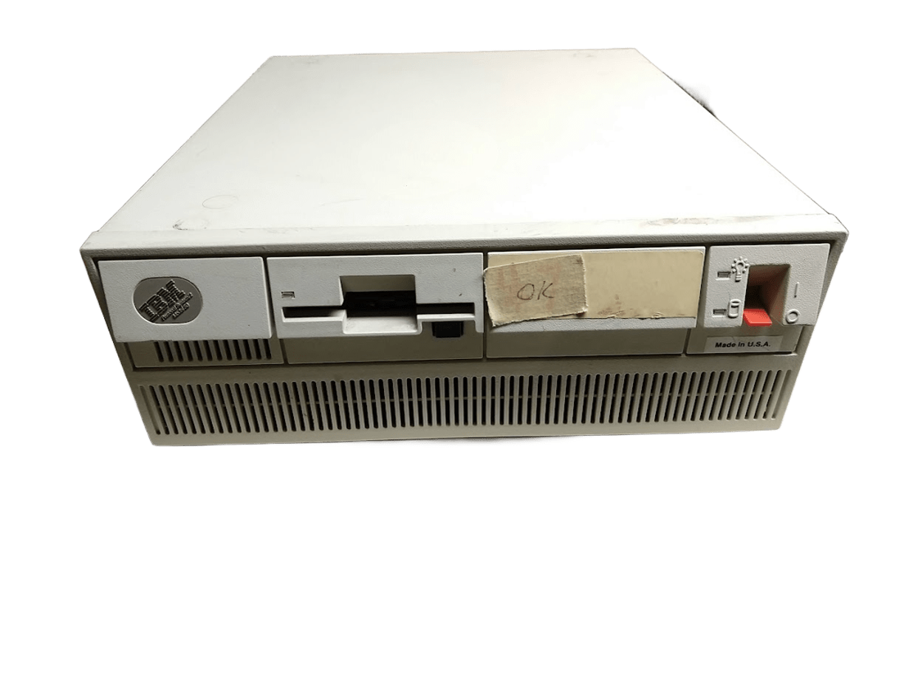
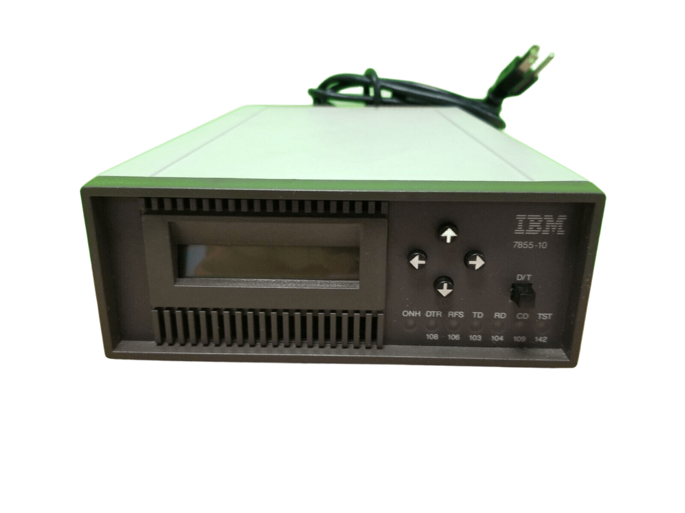
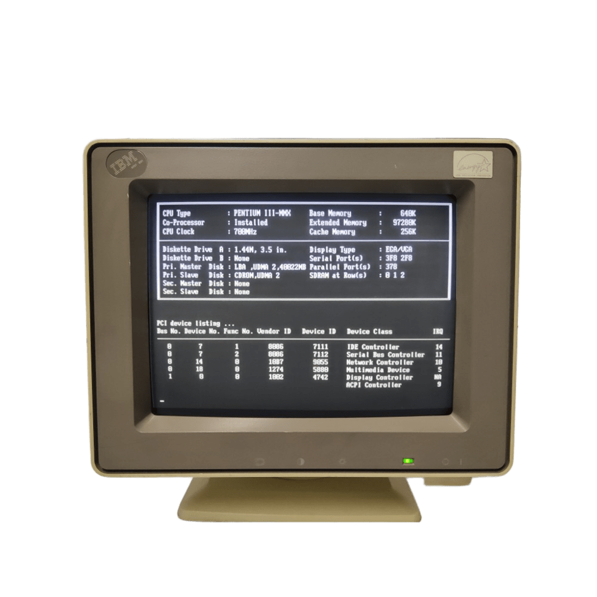

IBM 3191
Lanzamiento: 22 mayo de 1984

El IBM 3191, lanzado en mayo de 1984, es un destacado terminal de computadora que marcó un hito en la evolución de la tecnología informática. Diseñado para facilitar el acceso a sistemas mainframe y minicomputadoras, este dispositivo se convirtió en una herramienta esencial para empresas en la era de la digitalización.
Características Destacadas:
Equipado con una pantalla de 80 columnas y 24 filas, el IBM 3191 ofrecía una visualización clara y legible, utilizando tecnología de fósforo verde. Su teclado ergonómico y funcionalidad programable permitían a los usuarios introducir datos de manera rápida y eficiente, mientras que su capacidad de emulación lo hacía versátil, permitiendo la conexión a diversos sistemas.
Importancia Histórica:
El IBM 3191 no solo facilitó la interacción con los sistemas informáticos, sino que también transformó el flujo de trabajo en las oficinas, permitiendo el procesamiento de datos en tiempo real y el desarrollo de software. Su diseño robusto y compacto lo convirtió en una presencia habitual en escritorios de empresas de todo tipo.
IBM 5140

Lanzamiento: 21 de abril de 1983
El IBM PC Convertible (modelo 5140) es el primer ordenador portátil (clamshell) de IBM y el primer IBM con una unidad de disquete de 3,5".
Este es también el primer ordenador de IBM que funciona con baterías.
La IBM 5140 tiene un procesador Intel 8088 a 4,77 MHz, Memoria 640 KB máximo, Almacenamiento 2 unidades de disco de 720 KB y Sistema operativo IBM PC DOS con interfaz geográfica propia de iconos.
IBM PS/2 Modelo 50Z

Lanzamiento: 2 junio de 1988
Las PS/2 se caracerizaba por usar la arquitectra de microcanal exclusiva de IBM como bus de conexión del sistema, en lugar del bus ISA.
El Modelo 50 (IBM Modelo 8550) fue uno de los cuatro modelos originales que se anunciaron el 2 de abril de 1987 y que comprendían los modelos 30, 50, 60 y 80. Diseñado para reemplazar directamente al IBM PC/AT, venía con un microprocesador Intel 80286 que funcionaba a 10 MHz con un estado de espera. También venía de serie con 1 MB de RAM, una unidad de disquete de 3½" de alta densidad de 1,44 MB y un disco duro ST-506 de 20 MB. Al igual que los otros modelos de la gama, había varias opciones de pantalla disponibles, incluido un monitor monocromo de 12" o un monitor en color de 14", 16" o 19". Estos controlaban el nuevo adaptador de pantalla MCGA.
IBM 7855-10
Lanzamiento: 16 de abril de 1977

La IBM 7855-10 es un dispositivo de impresión de matriz de puntos que se lanzó en la década de 1980, diseñado para satisfacer las necesidades de impresión de las empresas en un momento de transformación tecnológica. Este modelo se convirtió en una herramienta esencial para la producción de documentos comerciales, combinando eficiencia y fiabilidad.
Características Técnicas:
Tipo de Impresión: Matriz de puntos, lo que permite la creación de caracteres y gráficos mediante el impacto de agujas en una cinta de tinta.
Resolución de Impresión: Aunque no alcanzaba las calidades de las impresoras láser modernas, la 7855-10 ofrecía una resolución adecuada para la mayoría de los documentos comerciales, garantizando textos claros y gráficos legibles.
Velocidad de Impresión: Capaz de imprimir hasta 300 caracteres por segundo, lo que la hacía eficiente para entornos de trabajo donde se requería una producción rápida de documentos.
Capacidad de Manejo de Papel: Soportaba diferentes tamaños de papel, incluyendo hojas sueltas y formularios continuos, facilitando su uso en diversos contextos de impresión.
Conectividad: Diseñada para integrarse sin problemas con sistemas IBM, contaba con múltiples interfaces, lo que permitía su conexión a mainframes y minicomputadoras.
Diseño y Construcción:
La 7855-10 presenta un diseño funcional y robusto, con una carcasa de metal que garantiza durabilidad en entornos de trabajo exigentes. Su panel de control intuitivo permite a los usuarios seleccionar configuraciones de impresión fácilmente.
IBM4707 e01

Lanzamiento: 10 de noviembre de 1997
El IBM 4707 e01 es un terminal de computadora lanzado a principios de la década de 1980, diseñado para satisfacer las crecientes demandas de interacción entre los usuarios y los sistemas de mainframe. Este dispositivo representa un avance significativo en la evolución de la informática empresarial, ofreciendo una interfaz eficiente y funcional para la gestión de datos.
Características Destacadas:
El IBM 4707 e01 se caracteriza por su pantalla de alta visibilidad, que permite la visualización clara de texto y gráficos. Equipado con un teclado robusto, facilitaba la entrada de datos de manera cómoda y rápida, mientras que su diseño modular permitía la integración en diversas configuraciones de red.
Innovaciones Tecnológicas:
Con capacidades de emulación que permitían su conexión a varios sistemas operativos, el IBM 4707 e01 era una herramienta versátil que facilitaba el acceso a aplicaciones críticas. Su tecnología de comunicación avanzada aseguraba una transmisión de datos rápida y fiable, convirtiéndolo en un componente esencial en los entornos empresariales de su época.